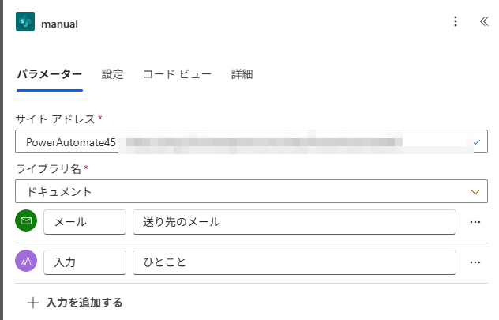
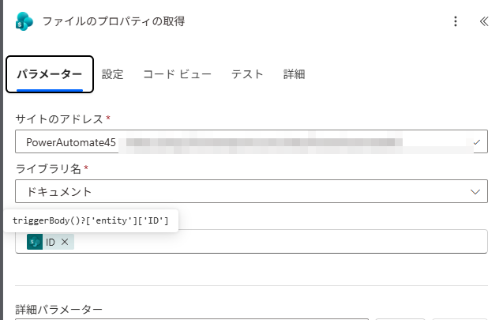
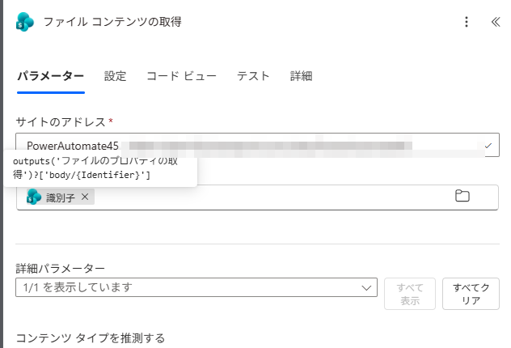
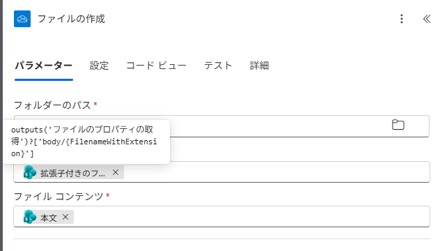
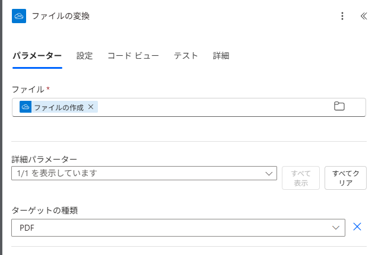
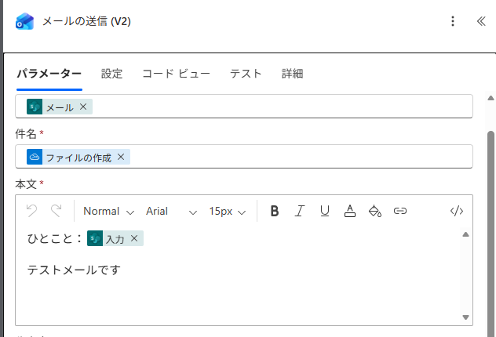
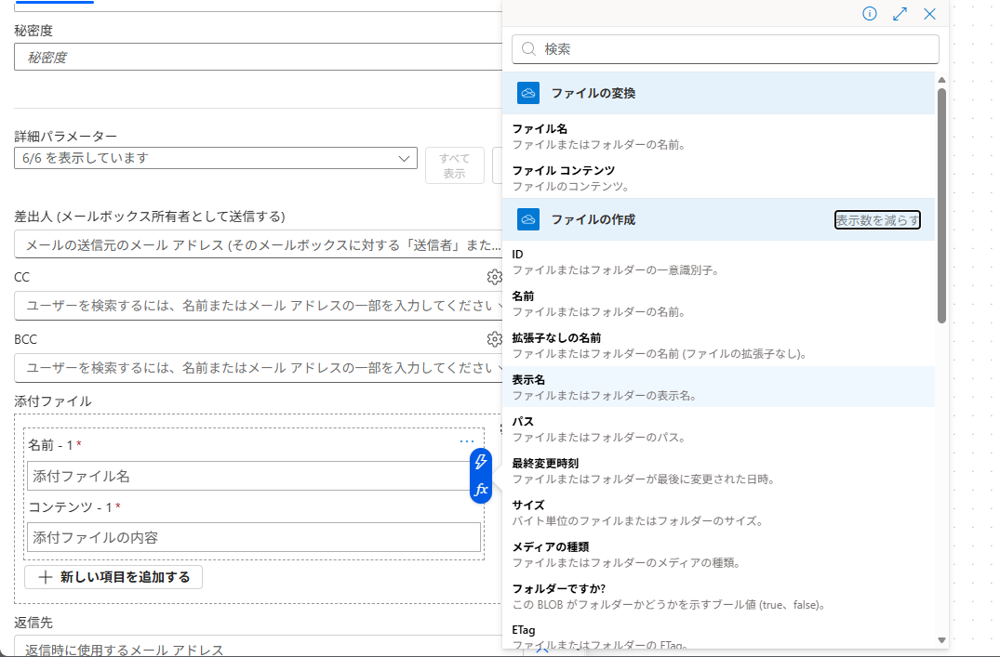
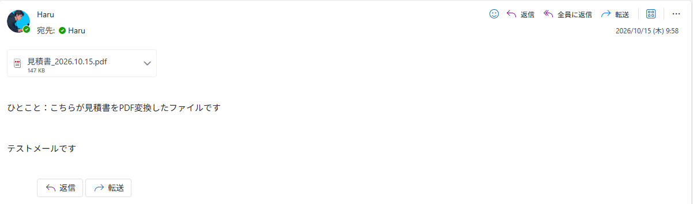

ファイルを選んで1クリックでPDFにして送るSharePoint のファイルの「…」から押すと、送り先とひとことを聞かれ、そのファイルが PDF になってメールで届きます。PDF にする変換は OneDrive の機能なので、一度自分の OneDrive にコピーしてから変換します。
今日つくるもの： SharePoint のファイルの「…」から押すと、送り先のメールとひとことを入れる画面が出て、そのファイルを PDF に変換してメールに添付して送るフロー。
📁 選択したファイルの場合（送り先・ひとこと）→
🔎 プロパティ／コンテンツの取得→
☁️ OneDrive に置いて PDF に変換→
📨 PDF を添付して送る
■ 今回の考え方（スライドの考え方①②）
- 事務の仕事は、受け付ける／書き写す／判断する／知らせる／まとめる／作る、の6つの動詞の組み合わせ。時間が消えるのは動詞と動詞のあいだ。
- 今回は、判断する（人：送るファイルと相手を選ぶ）→作る（PDF にする）→知らせる（添付して送る）を1クリックでつなぐ。第30回（Teams のメッセージ→To Do）と同じ「選んで1クリック」の形で、入口がファイルになった。
⚠️ 必ず「既定の環境」で作ります。 SharePoint のファイルの「…」→「統合」→「フロー」に出るのは、既定の環境で作ったフローだけです。開発環境・個人用の開発者環境で作ると、保存しても「…」のメニューに出てきません。作り始める前に、Power Automate の画面右上の「環境」を確かめてください。環境を切り替えたことがなければ、そのままで大丈夫です。
📖 この手順書の読み方： 各アクションに、実際の設定画面と表があります。表は 欄 ／ 入れるもの（⚡ のどのアクションから選ぶか）／ なぜ・あとでどう役立つか の順です。オレンジの「次に渡るもの」は、そのアクションが終わったあと、後ろのアクションに何が渡るかです。
🔰 初参加の方へ： ここから始めて大丈夫です。SharePoint・OneDrive・Outlook が使える会社・学校のアカウントがあれば作れます（個人の Microsoft アカウントでは作れません）。
準備
練習用の見積書を SharePoint に置く（2分）
この段のゴールSharePoint の「ドキュメント」に 見積書_2026.10.15.docx が並んでいる
なぜ実際の見積書で試すと、取引先に届いてしまうかもしれない。練習用の架空のファイルなら、何度押しても困らない。
1
下のURLをコピーしてブラウザに貼ると、練習用の見積書（架空）がダウンロードされます。
https://haru-powerplatform.github.io/pa45/slides/vol-31/sample/%E8%A6%8B%E7%A9%8D%E6%9B%B8_2026.10.15.docx
2
練習に使う SharePoint サイトの「ドキュメント」を開き、ダウンロードしたファイルをドラッグして置きます。
自分だけが使うチームのサイトでかまいません。
自分だけが使うチームのサイトでかまいません。
次に渡るものSTEP 5 で、このファイルの「…」からフローを押します。
3
ダウンロードできないときは、「＋ 新規」→「Word 文書」で1行だけ書き、名前を 見積書_2026.10.15 にします。
STEP 1
フローを作る（トリガー＝選択したファイルの場合）
この段のゴールトリガーに、入力「メール」と「入力（テキスト）」の2つが付いている
なぜファイルを自分で選んで押したい。SharePoint のファイルの「…」から押せるのは「選択したファイルの場合」のトリガーだから。
1
画面右上の「環境」が既定の環境か確かめます。
SharePoint のメニューに出るのは既定の環境のフローだけです。開発環境で作ったフローは出ません。
SharePoint のメニューに出るのは既定の環境のフローだけです。開発環境で作ったフローは出ません。
2
「作成」→「インスタント クラウド フロー」。フロー名は PDFにして送る、トリガーは SharePoint の「選択したファイルの場合」を選んで「作成」。
フロー名が、STEP 5 で SharePoint のメニューに並ぶ名前になります。キャンバスではトリガーが manual と表示されます。
フロー名が、STEP 5 で SharePoint のメニューに並ぶ名前になります。キャンバスではトリガーが manual と表示されます。
3
トリガーをクリックして欄を埋め、「＋ 入力を追加する」で入力を2つ足します。

| 欄 | 入れるもの（どこから選ぶか） | なぜ・あとでどう役立つか |
|---|---|---|
| サイト アドレス | 準備でファイルを置いたサイト | このサイトのファイルの「…」に、このフローが出る |
| ライブラリ名 | ドキュメント | このライブラリのファイルで押せる |
| ＋入力を追加する →「メール」 | 右の欄に 送り先のメール | 押した人に送り先を入れてもらう。⚡「メール」として STEP 4 の宛先に入る |
| ＋入力を追加する →「テキスト」 | 右の欄に ひとこと | 押した人にひとことを入れてもらう。⚡「入力」として STEP 4 の本文に入る |
💡 入力の左の欄と右の欄： 左の欄（メール／入力）は、後ろのアクションで ⚡ に出てくる名前です。右の欄（送り先のメール／ひとこと）は、押した人の画面に出る説明です。左の欄を書き換えると、⚡ の名前も変わります。
STEP 2
SharePoint から、選んだファイルの名前と中身を取り出す
この段のゴール「ファイルのプロパティの取得」と「ファイル コンテンツの取得」の2つが並んでいる
なぜトリガーが渡してくれるのは、どのファイルかを示す番号（ID）だけ。PDF にするには、ファイルの名前と中身が要るから。
1

| 欄 | 入れるもの（どこから選ぶか） | なぜ・あとでどう役立つか |
|---|---|---|
| サイトのアドレス／ライブラリ名 | トリガーと同じもの | トリガーと同じ場所のファイルを見るため |
| ID | ⚡ ID（トリガー「選択したファイルの場合」） | 押されたファイルがどれかを伝える |
次に渡るもの⚡「識別子」→ すぐ下のファイル コンテンツの取得／⚡「拡張子付きのファイル名」→ STEP 3 のファイル名
2

| 欄 | 入れるもの（どこから選ぶか） | なぜ・あとでどう役立つか |
|---|---|---|
| サイトのアドレス | トリガーと同じもの | |
| ファイル識別子 | ⚡ 識別子（ファイルのプロパティの取得） ⚡ の一覧は列の値が先に並ぶので、検索に「識別子」と打つと早い | 中身を取り出すファイルを指定する |
次に渡るもの⚡「本文」＝ Word の中身 → STEP 3 で OneDrive に置く中身になる
💡 プロパティの取得と コンテンツの取得 の違い
今回は両方使います。プロパティの取得で名前と識別子を取り、その識別子でコンテンツの取得が中身を取り出します。
| ファイルのプロパティの取得 | ファイル コンテンツの取得 | |
| 取れるもの | ファイルの情報（名札）：ファイル名・ID・識別子・パス・更新日時・更新者 | ファイルの中身そのもの：⚡ 本文（Word ファイル） |
| 入っていないもの | 中身（文章や表） | 名前や更新日 |
| こんなときに使う | 名前・日付・場所を使いたい（件名に名前を入れる、更新日で分ける） | ファイルそのものを渡したい（コピー、メールに添付、PDF に変換） |
STEP 3
OneDrive に置いて、PDF に変換する
この段のゴール「ファイルの作成」「ファイルの変換」の2つが並んでいる
なぜPDF への変換は OneDrive の機能で、つないだアカウントの OneDrive にあるファイルしか扱えない（Learn の既知の制限）。だから一度、自分の OneDrive にコピーする。
1
OneDrive for Business の「ファイルの作成」

| 欄 | 入れるもの（どこから選ぶか） | なぜ・あとでどう役立つか |
|---|---|---|
| フォルダーのパス | /PA45一時 | 自分の OneDrive にコピーを置く場所 |
| ファイル名 | ⚡ 拡張子付きのファイル名（ファイルのプロパティの取得） | 元と同じ名前（見積書_2026.10.15.docx）で置く |
| ファイル コンテンツ | ⚡ 本文（ファイル コンテンツの取得） | Word の中身をそのまま置く |
次に渡るもの⚡「ID」→ すぐ下のファイルの変換／⚡「拡張子なしの名前」（見積書_2026.10.15）→ STEP 4 のメールの件名
2
OneDrive for Business の「ファイルの変換」

| 欄 | 入れるもの（どこから選ぶか） | なぜ・あとでどう役立つか |
|---|---|---|
| ファイル | ⚡ ID（ファイルの作成） 欄には「ファイルの作成」と表示されます | OneDrive に置いたコピーを変換する |
| ターゲットの種類 | PDF にする |
次に渡るもの⚡「ファイル名」（見積書_2026.10.15.pdf）→ STEP 4 の添付の名前／⚡「ファイル コンテンツ」（できた PDF）→ STEP 4 の添付の中身
💡 ライセンス： OneDrive for Business の「ファイルの変換」は Standard。M365 に付いている Power Automate だけで使えます。Word Online (Business) の「Word 文書を PDF に変換する」は Premium（有償）です。
⚠️ 変換できないファイル： 署名・パスワード・IRM（情報保護）の付いた Word は変換できません。
STEP 4
PDF をメールに添付して送る
この段のゴール「メールの送信 (V2)」の宛先・件名・本文・添付が埋まっている
なぜここで、STEP 1〜3 で用意したものが1通のメールにまとまる。全部 ⚡ から選ぶだけで、手で書き写すものはない。
1

| 欄 | 入れるもの（どこから選ぶか） | なぜ・あとでどう役立つか |
|---|---|---|
| 宛先 | ⚡ メール（トリガー） | 押した人が入れた送り先に送る |
| 件名 | ⚡ 拡張子なしの名前（ファイルの作成） 欄には「ファイルの作成」と表示されます | 件名がファイル名（見積書_2026.10.15）になる |
| 本文 | ひとこと： ＋ ⚡ 入力（トリガー） ＋ 好きな1行 | 押した人のひとことが本文に入る |
2
「詳細パラメーター」の「すべて表示」で「添付ファイル」を出し、2つの欄を ⚡ で埋めます。

| 欄 | 入れるもの（どこから選ぶか） | なぜ・あとでどう役立つか |
|---|---|---|
| 名前 - 1 | ⚡ ファイル名（ファイルの変換） | 変換したあとの名前なので、最初から .pdf になっている |
| コンテンツ - 1 | ⚡ ファイル コンテンツ（ファイルの変換） | できた PDF の中身。「ファイルの作成」の下の項目は変換前の Word なので選ばない |
💡 おまけ： OneDrive の /PA45一時 には、PDF にする前の Word のコピーが残ります。気になるときは、メールの送信のあとに OneDrive for Business の「ファイルの削除」（ファイル＝⚡ ファイルの作成の「ID」）を足すと消せます。
STEP 5
保存して、SharePoint のファイルから押す
この段のゴール受信トレイに 見積書_2026.10.15.pdf 付きのメールが届いている
なぜこのフローの入口は SharePoint のファイルの「…」。送り先を自分にして、PDF が届くかを確かめる。
1
右上の「保存」。
2
SharePoint の「ドキュメント」で 見積書_2026.10.15.docx を選び、「…」→「統合」→「フロー」→「PDFにして送る」。
3
送り先（自分のアドレス）とひとことを入れて「フローの実行」。
4
届いたメールを開きます。

| 欄 | 入れるもの（どこから選ぶか） | なぜ・あとでどう役立つか |
|---|---|---|
| 添付 | 見積書_2026.10.15.pdf | STEP 3 のファイルの変換の ⚡ ファイル名とファイル コンテンツ |
| 本文の「ひとこと：…」 | 押したときに入れた言葉 | STEP 1 の入力（⚡ 入力） |
⚠️ メニューにフローが出ないとき： ①保存したか ②既定の環境で作ったか ③ページを再読み込みしたか を確かめます。